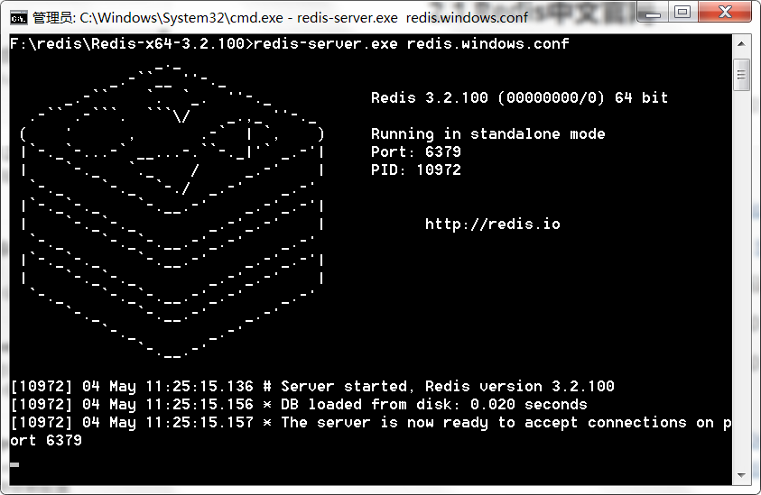

1. Redis简介
- 在实际开发中，一般使用缓存中间件：redis、ehcache、memcache；导入了对应的组件依赖，就可以使用
对应的缓存。 - Redis 是一个开源（BSD许可）的，内存中的数据结构存储系统，它可以用作数据库、缓存和消息中间件。 它支持多种类型的数据结构，如 字符串（strings）， 散列（hashes）， 列表（lists）， 集合（sets）， 有序集合（sorted sets） 与范围查询， bitmaps， hyperloglogs 和 地理空间（geospatial） 索引半径查询。 Redis 内置了 复制（replication），LUA脚本（Lua scripting）， LRU驱动事件（LRU eviction），事务（transactions） 和不同级别的 磁盘持久化（persistence）， 并通过 Redis哨兵（Sentinel）和自动 分区（Cluster）提供高可用性（high availability）。
- 我使用Redis作为缓存中间件。
2. 安装Redis服务和客户端
2.1 Redis中文官网
提供了各种对Redis的支持和参考文档以及下载，遇到问题时可以访问此网站寻求解决方法。
2.2 下载与安装
Windows版本：https://github.com/MicrosoftArchive/redis/releases
我在win机上测试，下载win版，解压然后运行redis-server.exe即可。
若服务无法运行或者闪退，请参考：
Redis服务启动成功：

安装 Redis 可视化客户端 redis-desktop-manager-0.8.8.384.exe。
运行redis-desktop-manager。
连接Redis服务，名字任取，Host即127.0.0.1即localhost，端口号默认6379。
连接成功。
至此Redis服务与客户端已经全部安装运行完成。
3. Redis支持的数据结构
3.1 常用五种数据结构
String：<key, value>
Hash：<key，fields-values>
List：有顺序可重复
Set：无顺序不可重复
Sorted Sets (zset) ：有顺序，不能重复
常用五种，当然还有更多数据结构请参考：
3.2 String：<key, value>
set：设置key和value。
1
2MyRedis:0>set A hello
"OK"get：获取指定key的value。
1
2MyRedis:0>get A
"hello"append：追加值。
1
2
3
4MyRedis:0>append A world
"10"
MyRedis:0>get A
"helloworld"incr：整数值加1。
1
2MyRedis:0>incr A
"ERR value is not an integer or out of range"A不是整型，所以无法执行原子加1操作。
1
2
3
4
5
6
7
8
9
10
11MyRedis:0>set B 1
"OK"
MyRedis:0>get B
"1"
MyRedis:0>incr B
"2"
MyRedis:0>get B
"2"B是整型，执行原子加1操作。
decr：整数值减1。
1
2
3
4
5MyRedis:0>decr B
"1"
MyRedis:0>get B
"1"keys *：查看所有key。
1
2
3MyRedis:0>keys *
1) "B"
2) "A"del key_name：删除指定key和他对应的value。
1
2MyRedis:0>del B
"1"
3.3 Hash：<key，fields-values>
相当于一个key对于一个Map，Map中还有key-value, 使用hash对key进行归类。
hset：
1
2
3
4
5
6
7
8MyRedis:0>hset myhash a1 1
"1"
MyRedis:0>hset myhash a2 2
"1"
MyRedis:0>hset myhash a3 3
"1"hget：
1
2MyRedis:0>hget myhash a2
"2"hgetall key_name：获取指定key的hash中所有key-value。
1
2
3
4
5
6
7MyRedis:0>hgetall myhash
1) "a1"
2) "1"
3) "a2"
4) "2"
5) "a3"
6) "3"更多语法请参考：
3.4 List：有顺序可重复
lpush：向左边添加值。
1
2MyRedis:0>lpush mylist a b c d
"4"lrange：获取指定key的list的所有值（0表示下标从0开始，-1表示获取所有）。
1
2
3
4
5MyRedis:0>lrange mylist 0 -1
1) "d"
2) "c"
3) "b"
4) "a"rpush：向右边添加值。
lpop：弹出左边第一个值。
rpop：弹出右边的第一个值。
1
2
3
4
5
6
7
8
9
10
11
12
13
14
15
16MyRedis:0>rpush mylist e f g
"7"
MyRedis:0>lrange mylist 0 -1
1) "d"
2) "c"
3) "b"
4) "a"
5) "e"
6) "f"
7) "g"
MyRedis:0>lpop mylist
"d"
MyRedis:0>rpop mylist
"g"更多语法请参考：
3.5 Set：无顺序不可重复
sadd：
1
2MyRedis:0>sadd myset a b c d e
"5"smembers：
1
2
3
4
5
6MyRedis:0>smembers myset
1) "c"
2) "d"
3) "b"
4) "a"
5) "e"srem：移除指定元素
1
2
3
4
5
6
7MyRedis:0>srem myset a
"1"
MyRedis:0>smembers myset
1) "d"
2) "b"
3) "c"
4) "e"更多语法请参考：
3.6 Sorted Sets (zset) ：有顺序，不能重复
zadd
keyscoremember：将所有指定成员添加到键为key有序集合（sorted set）里面。 添加时可以指定多个分数/成员（score/member）对。 如果指定添加的成员已经是有序集合里面的成员，则会更新改成员的分数（scrore）并更新到正确的排序位置，按成员得分由小到大排列。1
2MyRedis:0>zadd myzset 1 a 2 b 3 c
"3"zrange：
1
2
3
4
5
6
7
8
9
10
11
12
13
14
15
16
17
18
19
20
21
22
23MyRedis:0>zadd myzset 1 d 1 e
"2"
MyRedis:0>zrange myzset 0 -1
1) "a"
2) "d"
3) "e"
4) "b"
5) "c"
MyRedis:0>zadd myzset 10 a
"0"
MyRedis:0>zrange myzset 0 -1 withscores
1) "d"
2) "1"
3) "e"
4) "1"
5) "b"
6) "2"
7) "c"
8) "3"
9) "a"
10) "10"更多语法请参考：